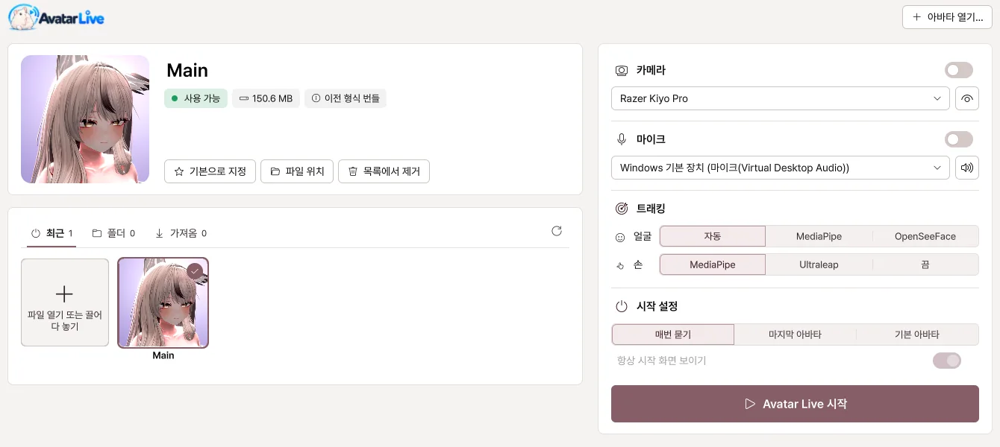
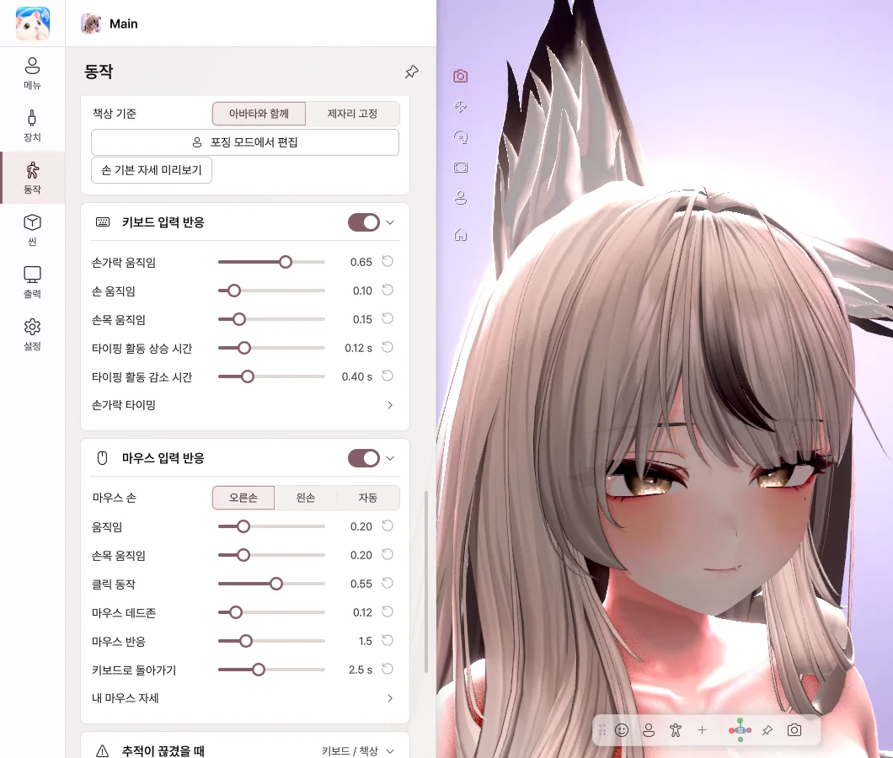

VRM 변환 없이
아바타 프로젝트에서 한 번 내보내면 끝. 아바타를 고쳐도 다시 내보내기만 하면 됩니다.
VRChat 아바타를 위한 Windows VTuber 앱
VRM 변환도, 복잡한 재설정도 없이.
익숙한 아바타를 방송과 화면 공유에 활용하세요.
이런 곳에서 바로
기능
다시 만들지 않아도 됩니다. 아바타에 담긴 것들이 그대로 움직입니다.

아바타 프로젝트에서 한 번 내보내면 끝. 아바타를 고쳐도 다시 내보내기만 하면 됩니다.

Poiyomi, lilToon 등 아바타에 쓴 셰이더를 그대로 보여 줍니다.
머리카락의 흔들림, 옷 토글, 표정 버튼까지 VRChat과 같은 설정으로 움직입니다.
웹캠 하나로 표정과 시선, 손가락까지. 아바타의 VRCFaceTracking 설정을 그대로 씁니다.

손이 화면에 없을 때도 타이핑과 마우스에 맞춰 손이 움직입니다. 입력한 글자는 기록하지 않습니다.
OBS에는 투명 배경으로, Discord에는 게임과 아바타를 한 화면으로 보냅니다.
사용 방법
VRChat에 업로드하던 아바타의 Unity 프로젝트(2022.3.22f1)를 엽니다.
Curious Bobby - Avatar Exporter에서 버튼 한 번으로 .vavatar 파일을 만듭니다.
파일을 열고 웹캠을 켜면 바로 움직입니다. 그 뒤로는 Unity가 필요하지 않습니다.
VRM · .vrca 파일만으로는 사용할 수 없습니다. 아바타의 Unity 프로젝트가 필요합니다. 내보내기 가이드 보기
비교
프로그램마다 지원 범위는 다를 수 있습니다.
에디션
Basic과 Pro는 같은 프로그램입니다. 입력한 라이선스로 에디션이 정해집니다.
개인 사용
1,990엔
방송 · 영상 공개 · 상업적 이용
3,980엔
이미 Basic을 쓰고 있다면 BOOTH의 업그레이드(1,990엔)로 Pro가 됩니다.
가격은 BOOTH 표시 기준입니다. 디지털 상품 특성상 구매 후에는 기본적으로 환불이 어려우니 구매 전에 준비물을 확인해 주세요. 환불 정책
FAQ
네. VRChat에 업로드하던 아바타의 Unity 프로젝트에서 Exporter로 내보내면, 셰이더 · PhysBone · Expression 메뉴를 그대로 씁니다.
아바타 파일을 만들 때 한 번 필요합니다(Unity 2022.3.22f1). 만든 뒤에는 Unity 없이 사용합니다.
지금은 지원하지 않습니다. VRM 불러오기는 추가 지원 예정입니다.
아바타에 쓴 셰이더를 그대로 보여 주며, Poiyomi, lilToon 등 주요 셰이더에서 확인했습니다. AudioLink와 미러 감지는 지원하지 않습니다.
네. 화면 공유를 켜고 Discord에서 'Avatar Live Share Output'을 고르면 게임과 아바타가 함께 공유됩니다.
Basic은 개인 사용(친구와의 비공개 Discord 공유 포함), Pro는 방송 · 영상 공개 · 상업적 이용을 위한 에디션입니다. Pro는 4K 출력, 워터마크 없음, 포징, 오브젝트를 지원합니다.
Windows 10 / 11(64비트)만 지원합니다.